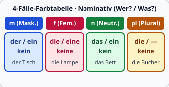

Articles and Noun Gender
Learn with an AI tutor
An AI tutor explains this page to you and helps you with the exercises. Choose your assistant:
Open with Claude Open with ChatGPT Open with Mistral Vibe
You use your own account with the provider. The assistant is not offered by lernapps.net: lernapps only provides the content and the exercises. The choice holds for all pages, on this device only.
The Four Color Columns in Sam's Room
Sam is setting up his new room at the Webers' house in Lindenberg. Every German noun has a grammatical gender: masculine (der, blue), feminine (die, red), or neuter (das, green). Plural always uses die (amber).

© CC-BY-SA-4.0Our 4-Case Color Table starts with the nominative row. Each new chapter adds one row.
Helpful Gender Clues
Always learn each noun together with its article. Some endings give reliable clues: -ung, -heit, -keit, -tät are always feminine (die Wohnung, die Freiheit), and -chen, -lein are always neuter (das Brötchen, das Mädchen).
| German | Example · note | English |
|---|---|---|
| der Schreibtisch | Der Schreibtisch steht am Fenster. The desk stands by the window. | desk |
| der Stuhl | chair | |
| die Lampe | Eine Lampe steht auf dem Tisch. A lamp is on the desk. | lamp |
| die Gitarre | guitar | |
| das Bett | bed | |
| das Regal | shelf |
Practice
Exercise
Choose the matching definite or indefinite article for Sam's room.
- The desk is big. → … Schreibtisch ist groß.
- A lamp is standing here. → … Lampe steht hier.
- The bed is comfortable. → … Bett ist bequem.
- A shelf is next to the bed. → … Regal steht neben dem Bett.
Solution
- Der Schreibtisch ist groß.
- Eine Lampe steht hier.
- Das Bett ist bequem.
- Ein Regal steht neben dem Bett.
Masculine takes der/ein, feminine takes die/eine, and neuter takes das/ein.
Exercise
Solution
das Brötchen (n) · die Zeitung (f) right answer
Exactly! Nouns ending in *-chen* are always neuter (*das*), and nouns ending in *-ung* are always feminine (*die*).
der Brötchen (m) · die Zeitung (f)
*die Zeitung* is right, but *-chen* always makes nouns neuter: *das Brötchen*.
das Brötchen (n) · der Zeitung (m)
*das Brötchen* is right, but nouns ending in *-ung* are always feminine: *die Zeitung*.
Endings like *-chen* (neuter) and *-ung* (feminine) reliably show a noun's gender.
Found a mistake or have an idea for this app?